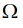

The Scaled-Sigma Sampling Method
The Scaled-Sigma Sampling method generates samples where the standard deviation has been scaled up. This method is more accurate than the Worst-Case Distance method for nonlinear behavior and more efficient when there is a large number of statistical parameters and specifications. As a result, a larger number of samples fall into the failure region of the distorted distribution. The failure rate is then estimated from the scaled samples.
This method is selected by default when the yield is greater than 3 sigma.
The Scaled-Sigma Sampling method is a resource-intensive method, but offers the following advantages:
- Efficiency for high dimensionality (very large numbers of devices and statistical parameters)
- Accuracy even for cases of high non-linearity
- Efficiency when the design is constrained by a large number of specifications
This figure shows the unscaled performance distribution (scaling factor s=1) compared to the scaling factor s=2.
Here, x = process parameter and 
= failure region.
The failure rate can be calculated as:
The above equation models the failure rate as a function of the scaling factor. The model has very few constraints on the failure region and can target multiple failure regions. The model is constructed based on a set of scaled Monte Carlo runs. Then, the unscaled yield estimate (s=1) can be found.
Related Topics
Confidence Interval and Number of Samples
Running the Scaled-Sigma Sampling Method
Return to top